官方手册按 GD-77 写，UV390 没有左右方向键。手册里每一句「按左/右方向键」都要换算。
VFO 与信道界面通用。SK1 是黑色侧键，SK2 是蓝色侧键。
北京中继的公开数据是 2015 年的，还互相矛盾。用电台自己扫比查任何表都可靠。
438000440000 = 438.000–440.000固件实时算多普勒并同时修正收发频率。UV390 是少数带真实 RTC 时钟的型号，预测精度 ±5 秒。
python tools/sat.py refresh --yes（只写 TLE，不动时钟），或 CPS → Extras → OpenGD77 Support → Install satellite keps — CPS 那条顺带会改写电台 RTC，想顺便校时用它、不想动时钟用 sat.py39.904 / 116.407 足够 — 南北半球 ▼/▲，东西半球 SK2+▼/▲On → 按绿键确认DISABLE_SAT_ALARM 那条。过境预报、极坐标跟踪、多普勒修正全都还在python tools/sat.py list 就会逐颗报它们的历元和已过去多少天。这几天实际踩到的坑，按症状查。
ERROR Rx OnlyOptions → Radio Options → VHF/UHF SquelchOff = 检测到模块了、只是没开（操作问题）；None = 固件开机监听不到 9600bps 的 NMEA，判定没装 GPS 硬件Options → General Options → GPS 转到 On，必须按绿键确认。None → 属硬件/协议问题，跟固件无关，自己编译也没用NMEA 模式 —— 它会占用 USB 串口发 GPS 数据Off 或 On。另外确认电台是正常开机状态，不是 DFU 模式Menu → RSSI，那里给 dBm26 个信道 / 3 个 Zone。卫星频率取自 CPS 的 satellites.txt，与电台星表一致；北京中继来自 CRAC 2015 年表，全部待实测。
| # | 信道 | Zone | 下行 RX | 上行 TX | 亚音 / 色码 |
|---|---|---|---|---|---|
| 1 | AO-91 | SAT | 145.960 | 435.250 | 67.0 |
| 2 | AO-123 | SAT | 435.400 | 145.850 | 67.0 |
| 3 | IO-86 | SAT | 435.880 | 145.880 | 88.5 |
| 4 | ISS | SAT | 437.800 | 145.990 | 67.0 |
| 5 | ISS APRS | SAT | 145.825 | 145.825 | — |
| 6 | LilacSat | SAT | 437.200 | 144.350 | — |
| 7 | POEM 4 | SAT | 145.870 | — | 仅收 |
| 8 | POEM 4 APRS | SAT | 145.825 | 145.825 | — |
| 9 | PO-101 | SAT | 145.900 | 437.500 | 141.3 |
| 10 | SO-50 | SAT | 436.795 | 145.850 | 67.0 / arm 74.4 |
| 11 | SO-124 | SAT | 436.885 | 145.925 | — |
| 12 | SONATE-2 | SAT | 145.880 | — | 仅收 |
| 13 | SONATE-2 APRS | SAT | 145.825 | 145.825 | — |
| 14 | UmKA-1 | SAT | 437.625 | — | 仅收 |
| 40 | BR1KA DMR U1 | BJ | 439.550 | 434.550 | CC8 TS1 |
| 41 | BR1KA DMR U2 | BJ | 439.550 | 434.550 | CC8 TS2 |
| 42 | BR1KA DMR V1 | BJ | 145.350 | 144.750 | CC8 TS1 |
| 43 | BR1KA DMR V2 | BJ | 145.350 | 144.750 | CC8 TS2 |
| 44 | BR1BJ FM | BJ | 438.450 | 432.950 | 88.5 |
| 45 | BJ 145.400 | BJ | 145.400 | 144.800 | 88.5 |
| 46 | BJ 439.050 | BJ | 439.050 | 430.550 | 179.9 |
| 47 | BJ 439.650 | BJ | 439.650 | 430.650 | 79.7 |
| 48 | BJ 439.750 | BJ | 439.750 | 434.750 | — |
| 60 | SIMP 438.500 | SX | 438.500 | 438.500 | — |
| 61 | SIMP 145.100 | SX | 145.100 | 145.100 | — |
| 62 | SIMP 434.750 | SX | 434.750 | 434.750 | — |
按比例绘制。绿色是卫星段 —— 地面通联要避开，但打卫星正好该用这里。
别误碰。
0x8f000，刷固件碰不到它。但它每台唯一、丢了补不回来 —— Extras → OpenGD77 Support → Backup Flash，16MB 要跑几分钟，中途别拔线。都是本地编译的，上游没有。每个功能一个编译开关，默认关闭 —— 关掉时行为与官方固件等价，所以随时能退回去。下面每张截图都是从电台帧缓冲直接读出来的，不是示意图。
| 开关 | 功能 | 日常固件 | 状态 |
|---|---|---|---|
| ENABLE_THEME_PRESET | 配色预设 | 带 | 实机验收 |
| ENABLE_INFO_DENSITY | 信道信息行 + 功率染色 | 带 | 实机验收 |
| ENABLE_UI_STYLE | 界面样式 7 项可调 | 带 | 实机验收 |
| ENABLE_WATERFALL | 瀑布图 + 频率标尺 | 带 | 实机验收 |
| ENABLE_FAST_SCAN | 模拟扫描加快到 6 ms | 带 | 已编译 |
| ENABLE_DOPPLER_READOUT | 多普勒偏移读数 | 带 | 实机逐位核对 |
| ENABLE_BAND_LOG | 频段占用日志器 | 带 | 实机 14 条 |
| ENABLE_AES | AES-256 菜单 | 带 | 菜单已确认，收发待实测 |
| ENABLE_DMR_DATA | DMR 短信 | 带 | 菜单已确认，收发待实测 |
| DISABLE_SAT_ALARM | 删掉卫星闹钟 | 带 | 已移除 |
| ENABLE_KEY_INJECTION | 远程屏幕 + 按键注入 | 不带 | dev 专用，RAM 不够共存 |
| ENABLE_SPECTRUM | USB 驱动的扫频接收 | 不带 | dev 专用，未转正 |
为什么上游 themeInitToDefaultValues() 把 32 个主题项全设成同一组前景色，所以这块 160×128 彩屏出厂跑起来跟它移植来源的单色 GD-77 一模一样（实测整屏只有 2 种颜色）。固件里那些按语义命名的颜色 —— 电池绿/黄/红、S 表分段 —— 全被压成黑。
怎么用绿 → Options → Theme Options → 第一行 Colour:Mono / Colour / Custom。▲▼ 切换立即预览（这一页本身就是用这套颜色画的），SK2+绿 存盘。
限制只改前景色，这是设计决定不是偷懒。三个背景项都是陷阱：BG_MENU_NAME 染了会在彩色标题条上给每个字符打一个背景方块；BG_HEADER_TEXT 没有整条填充、染了就是「字底深块、字间露白」；BG_MENU_ITEM_SELECTED 选中行文字是反色画的，要染就得把菜单全部文字一起染。
预设表全是 const，RAM 零开销。不存「你选了哪个」，而是比对当前颜色反推 —— 所以手动改过任何一项就老实显示 Custom。
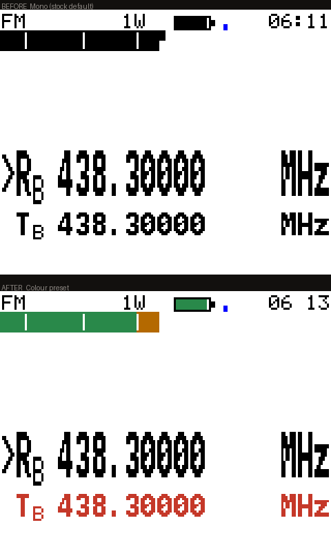
为什么量出来的：FM 信道屏 63%、DMR 信道屏 46% 完全空白，最大空洞 y90–113 整整 24 行。更要命的是信道屏根本不显示频率 —— 一个信道就只是一个名字，而「中继为什么打不开」要查的三件事全藏在 SK1 或两层菜单后面。
显示什么在那个洞里加一行紧凑信息，用次要文字色，不跟信道名抢：下行频率 · 差频（或上行绝对频率）· 上行亚音（或 DMR 色码）。
T / R 前缀标明 —— RX 亚音只决定你听到什么，TX 亚音才是开中继的那个。+289.290，算术对但没用）。10 MHz 盖得住所有业余中继差频，最宽的 70cm 是 7.6 MHz。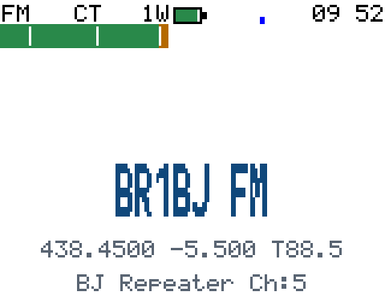
438.4500 −5.500 T88.5 —— 下行、差频、上行亚音。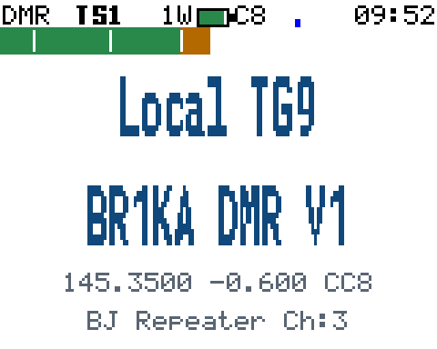
145.3500 −0.600 CC8，表头也有 C8，两处一致。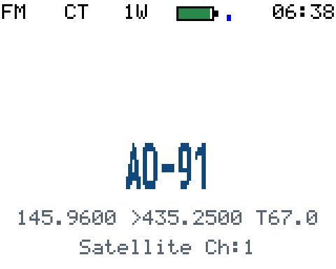
145.9600 >435.2500 T67.0 —— 差频超 10 MHz，直接给上行频率。附带修掉DMR 表头的色码本来就在画（x 86–98），是被我自己的电池图标（当时定在 84–103）无声擦掉的。电池改成 10 px、挪到 x=72，两端各留 2 px，并用 _Static_assert 把越界钉死。表头 x 坐标图现在写进注释了：0–17 模式 · 28–43 时隙 · 60–69 功率 · 72–83 电池 · 86–98 色码 · 108–125 GPS · 130–158 时钟。
在哪绿 → Options → Theme Options → UI Style。改完同样是 SK2+绿 存盘。
| 项 | 取值 | 作用 |
|---|---|---|
| S-meter H | 4–10 px | S 表高度。默认 4 px 就是出厂那条细线 |
| S-mtr ticks | On/Off | S1/S3/S5/S7/S9 刻度（上游写好了但被 #if 0 封着） |
| S-mtr zones | On/Off | 按强度分段着色，不再是一条平色 |
| Batt icon | On/Off | 电池图标取代 87% / 7.4V 文字 |
| TX header | On/Off | 发射时整条表头染色 |
| GPS icon | On/Off | 信号格取代 GPS 三个字母：1 格搜星 / 2 格 2D / 3 格 3D |
| WF gamma | Linear / Square / Cube | 瀑布图底噪压制强度，见下一条 |
存在哪自己的自定义数据块（类型 9），不挂在 THEME_DAY/NIGHT 后面 —— 那两块是按固定长度数组读回的，加长会让已经存过颜色的人升级后设置失效。独立块的好处是「不存在」天然等于「用默认值」，不用迁移、不用版本号。
注意WF gamma 存 0 必须继续表示 Square：这个字节在选项存在之前一直是 0，而当时的行为就是平方律。改变 0 的含义会让已经保存过设置的人升级后显示无声变样。
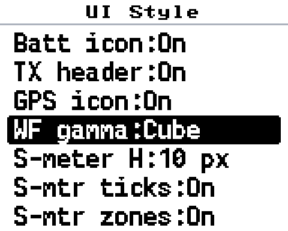
在哪VFO 下 长按# 进频谱扫描。布局实测：trace y10–49（40 px）/ 瀑布 y50–77（28 行）/ 频率标尺 y78–87。标尺需要两个开关都开 —— 列到频率的换算函数住在 ENABLE_FAST_SCAN 那一块里。
换掉了什么原来是经典 jet 彩虹。彩虹对「量级」这种数据是错的编码：它既不是感知均匀的，最亮的区域还在中段。实测 2m 底噪占 level 5–38、中位 19，正好被涂成满饱和青绿，真载波（level 63）淹在里面。改成单色阶 黑→蓝→白，亮度随量级单调递增。
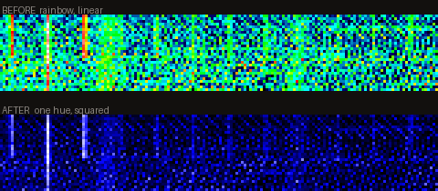
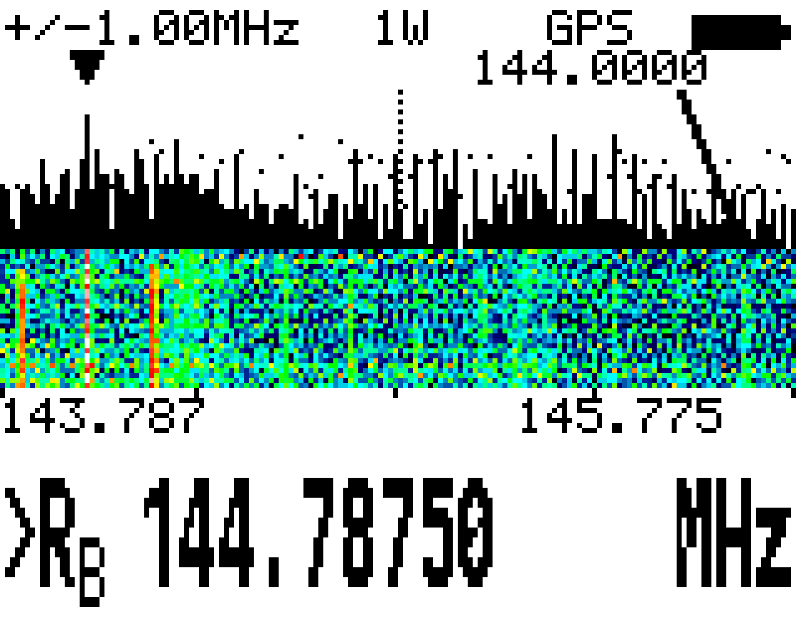
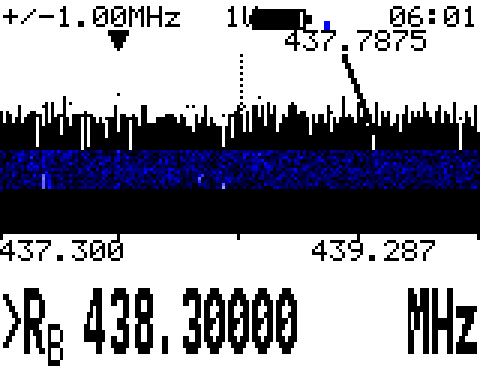
gamma 三档没有哪一档普遍更好，这就是它该是选项的理由。同一批 4480 个真实样本算出来：
| 底噪中位 | 75% | 95% | 峰值 | 用到色阶 | |
|---|---|---|---|---|---|
| Linear | 8 (12%) | 24 | 32 | 46 | 73% |
| Square | 1 (1%) | 9 | 16 | 33 | 52% |
| Cube | 0 (0%) | 3 | 8 | 24 | 38% |
这天 70cm 很安静，Linear 用满色阶最合适；而之前那次底噪占到 30%，平方律才对。band 安静就调 Linear，吵就调 Square / Cube。
限制历史只有 28 行，约 28 次扫描，而且存不下更多 —— 160×28×2 = 8960 字节，RAM 只剩 1.5 KB 左右。全屏重绘时瀑布会被清成色阶零色（黑），不是坏了；原来清成背景色，浅色主题下留一大片白，要等 28 轮才填回来。
在原有的 Scan dwell time 设置里增加 20 / 15 / 10 / 6 ms 四档。只影响模拟扫描；数字扫描取这个值和 DMR 时隙最小值中较大的那个，所以不受影响。电台上和 CHIRP 里都能选。
在哪卫星实时数据屏底部那 18 行空白处，一行 Dop R+9.11 T−3.03：两个波段各被推了多少 kHz、往哪个方向。
为什么有用上面的修正后频率回答「调到多少」，这一行回答「我在过境的哪一段」—— 偏移开始时最大、最近点过零、之后反向。光看修正后的频率看不出趋势。而且这是这一屏上唯一能确认上行也在被修正的地方（两路量值按频率比不同、符号相反）。
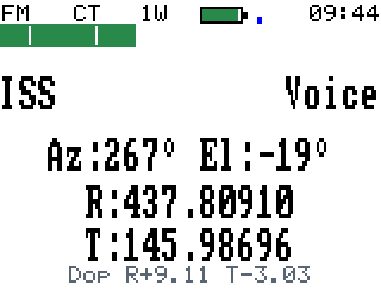
R+9.11 表示下行被推高 9.11 kHz，T−3.03 上行被推低 3.03 kHz。SCREEN_LINE_BUFFER_SIZE(17)，而这行正好 17 字符，snprintf 悄悄砍掉最后一位（T−2.9 本该是 T−2.91）。看屏幕发现不了 —— 有数字有正负号，完全合理。另一个只在特定数值下暴露的 bug："%+d" 作用在 delta/1000 上，整数除法向零截断，偏移绝对值小于 1 kHz 时一律显示正号 —— 而那正是最近点附近、最需要方向的那几十秒。两个都是拿原始字节核对算术才露的馅。
真问题不是「星表太小」—— 星表是码表里25 个固定槽位，槽位数改不了。真问题是 TLE 会过期：星历大约每老一周，过境预报就差一分钟，而电台既不知道自己的星历多旧、也从不说。
python tools/sat.py list # 装了哪些、各自多旧 python tools/sat.py dump keps.txt # 导出成标准两行 TLE python tools/sat.py refresh --yes # 从 CelesTrak 拉新星历写回 python tools/sat.py addfm --yes # 空槽位填 FM 转发卫星
做了什么8 颗从 2.0–2.8 天旧刷新到 0.3–1.1 天旧；另外加了 9 颗 TEVEL（槽位 8–16）。写之前做了往返自检（编码→解码→跟源 TLE 逐字段比，4 颗 × 10 字段零不一致）；写之后电台重算的预报与刷新前只差秒级和 1 度 —— 正是 2 天星历该有的漂移量级。
频率怎么来的不是回忆的，是两个独立来源交叉验证的：SatNOGS DB 的收发信机记录与 AMSAT 的 FM 卫星频率页都给出上行 145.970 / 下行 436.400，一致才写。TEVEL 的 CTCSS 留空 —— 两个来源都没写，而亚音错了是静默失败（照发、卫星不理、屏幕无提示），比留空更难排查。没加 AO-27 和希望一号：SatNOGS 标它们「active」指的是记录有效，不代表卫星还在工作，两颗都不在 AMSAT 当前活跃列表上。
格式坑TLE 在码表里是半字节压缩的，每字节两个 nibble 查表 0123456789. +-*，存的不是原始文本而是推演器要的字段、按列直接拼接无分隔符。还有：loadKeps() 在第一个名字首字节为 0 的槽位就停，新记录必须连续写在已有的之后，中间不能留空。
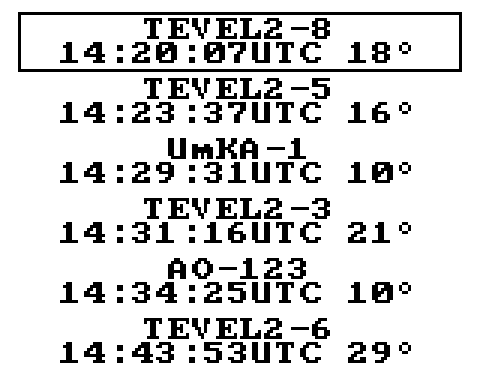
做什么把每一轮扫描（160 个 RSSI 采样 + 时间 + GPS 定位）记进 16 MB SPI flash 的最后 2 MB，循环覆盖。188 字节一条，约 11150 条。挂在扫描回卷点上，零额外 RAM（直接从 vfoSweepSamples 写出）。
怎么用双击 启动控制端.bat → 浏览器开 127.0.0.1:8390 → 频段日志卡片启停、导出、看热力图。离线出 PNG 用 tools/render_bandlog.py（明暗两套）。
限制和 NMEA 定位日志共用那 2 MB，运行时互斥 —— 同时只能开一个。
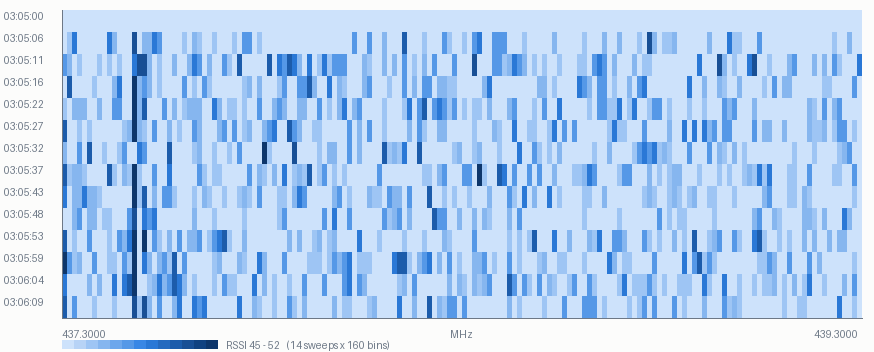
来自 dondch/OpenGD77-AES256 这个 fork，不是我写的。菜单在电台上已经确认出现，收发没测过 —— 要两台机器，而且发射得有呼号。密钥可以从控制端写入。
删了什么上游那套 SK2+绿 布防、休眠省电、AOS 前 1 分钟唤醒响铃，连同我为它加的 ENABLE_SAT_ALERT，全部编译掉。卫星屏其余一切照旧：过境预报、极坐标跟踪、多普勒修正后的收发频率都在。
为什么放弃逻辑验到第 5 阶段都是对的，卡在没法确认用户真的会被通知到：彩屏平台上 uiNotificationRefresh() 推完屏会立刻把帧缓冲还原，抓屏结构性看不见任何通知。这不是 bug，是平台本来的样子 —— 意味着这个功能没法用远程手段验收。
教训做不出来的东西应该自己喊停，而不是一直测到用户喊停。
电脑读帧缓冲当显示器、发命令当键盘，整个 UI 自查闭环就靠它。控制端有「远程屏幕」卡片；命令行用 tools/drive.py（按一串键并每步截图）。
为什么日常固件没有它和 ENABLE_AES + ENABLE_DMR_DATA 一起开会 RAM 溢出 104 字节，装不下。所以跑日常固件时按键注入不可用，只剩抓屏和刷机。以后再改 UI 要么你在键盘前，要么临时刷一版 DEV 再刷回来。
关键修复虚拟 SK1/SK2 —— 注入的是 keys，而 BUTTONCHECK_DOWN(ev, BUTTON_SK2) 读的是 buttons，两套状态。所以所有 SK2+绿 存盘的手势（配色预设、UI Style 都是）原本远程做不了，只能预览不能落盘。
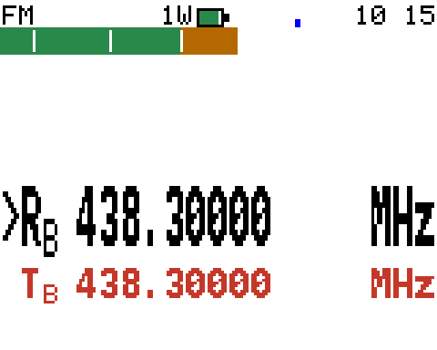
FM 1–11 · 1W 60–69 · 电池 72–83 · GPS 108–109 · 时钟 131–158，各就各位零重叠。先分清三层存储，不然会在救不回来的东西上浪费时间，又漏掉真正不可再生的那份。
| 存在哪 | 装着什么 | 丢了怎么办 |
|---|---|---|
| MCU 内部 flash 1 MB，STM32F405VG |
bootloader（TYT 的，0x08000000）+ 固件（0x0800C000 起） |
随便丢。OpenGD77 随时重刷。原厂固件备份不了，见下。 |
| 外挂 SPI flash 16 MB |
校准数据（0x8f000）· 码表 · 主题 · UI Style · 卫星 TLE · 频段日志 |
校准每台唯一，丢了补不回来。这才是必须备份的那份。 |
| Secure Registers 768 字节 |
安全寄存器 | 已备份，顺手的事 |
| 备什么 | 什么时候 | 为什么 |
|---|---|---|
| 整块 16 MB SPI flash | 动手改任何东西之前 | 里面有校准数据，每台唯一、丢了补不回来。这一份最要紧 |
| 校准（单独那 1 KB） | 同上 | 小、好存、好核对。与整块 flash 重复，但多一份不吃亏 |
| EEPROM | 同上 | CPS 同一个窗口里一并备了 |
| Secure Registers | 同上 | 768 字节，顺手的事 |
| 再一份整块 16 MB | 配好之后 | 把「改成现在这样」存下来。与出厂那份分开放，出事优先用出厂那份恢复校准 |
备份别只放一个地方。本地 + 网盘（或别的盘）各一份 —— 这几个文件是这台机器上真正不可再生的东西。
Extras → OpenGD77 Support → 依次备份 Calibration、EEPROM、整块 Flash，三个都要命令行也行，读任意区段，不用开 CPS：
python -c "import sys;sys.path.insert(0,'tools');import ogd77;r=ogd77.Radio(); r.dump(ogd77.FLASH, 0, 16*1024*1024, 'backup/flash.bin', 'flash');r.close()"
现在是我自己刷、自己回读校验，不用你在回路里 —— 但进 DFU 这一步必须你手动按，这台机器上没有别的办法。详细版在 docs/flashing.md。
flash.py --listpython tools/flash.py 某个.bin —— 预检，不写入。确认认得到设备、镜像合法python tools/flash.py 某个.bin --yes —— 真刷。合并 codec、加密、下载，一分钟内python tools/flash.py 某个.bin --verify —— 从 MCU ROM 回读 5 处 × 2048 字节跟本地比，0.4 秒，能区分相邻两版__DATE__，编在 usb_com.c 里；增量构建时那个文件没被重编，报的是上一次的时间。要确认电台上跑的到底是哪一版，只能用 --verify。0483 DF11。绝对不要碰 OpenGD77 (COM13) / 1FC9 0094 —— 那是正常模式的串口，换了 CPS 和控制端全挂MDUV380_ENCODE_CIPHER 逐字节异或，擦写前还要发两条私有命令 0x91 0x01 / 0x91 0x31。标准工具不会发这些STM Device in DFU Mode0x08000000，我们只写 0x0800C000 往上，碰不到它。直接重跑 flash.py 就行。真要退回 CPS 刷，先按上面把驱动换回 STTub30。Patching for DMR。拼接偏移 0x6937C、长度 0x48BB0 是链接脚本里 . = ABSOLUTE(0x807537C) 钉死的，不随代码大小浮动。已经全部就位，不用再装什么。这里记的是「都有什么、放在哪、怎么跑」。
| 东西 | 版本 / 位置 | 备注 |
|---|---|---|
| ARM 工具链 | Arm GNU 14.2.Rel1 firmware\toolchain\bin | 项目内自带，不用装到系统 PATH |
| 源码 | firmware\OpenGD77-AES256 git 2ce799d | fork 自 dondch/OpenGD77-AES256，基线是上游 R20260131 |
| Python | 3.11 + pyserial 3.5 + pillow + libusb-package | libusb-package 是 DFU 后端，没它 flash.py 跑不了 |
| donor 固件 | 210525 MD-9600…\MD9600-CSV(2571V5)-V26.45.bin | AMBE 语音编解码从这里面抠，项目里不含源码 |
| codec_cleaner | .exe（不是 .Linux） | 上游硬编码了 ELF 版，Git Bash / MSYS 下跑不了。Makefile 已改成按 $(OS) 挑 |
出一版日常固件的完整命令：
export PATH="/d/project/MD-UV390/firmware/toolchain/bin:$PATH"
cd /d/project/MD-UV390/firmware/OpenGD77-AES256/MDUV380_firmware
rm -rf build # 换过开关就必须清，见下
make -j8 ENABLE_AES=1 ENABLE_DMR_DATA=1 ENABLE_WATERFALL=1 \
ENABLE_FAST_SCAN=1 ENABLE_UI_STYLE=1 ENABLE_BAND_LOG=1 \
ENABLE_THEME_PRESET=1 ENABLE_INFO_DENSITY=1 \
DISABLE_SAT_ALARM=1 ENABLE_DOPPLER_READOUT=1
python tools/package_fw.py build/openuv380-10w.bin # 想用 CPS 刷才需要打 zip
rm -rf build —— make 不跟踪开关变化，只看源文件时间戳。不清就换开关会得到混合构建（部分 .o 还带着上一轮的开关）。我就这么撞上过一次「莫名其妙的 104 字节 RAM 溢出」，其实是残留的 AES 目标文件。size 的 text 判断代码变没变 —— 四种配置编出来 text 全是 728864，我一度以为回归脚本坏了。真相：AMBE 占位段被链接脚本钉在固定结束地址，.text 长一点它就短一点，两者之和恒定。代码变没变看 md5，装不装得下看 RAM。codeplug.h 的枚举是共享定义，加新类型必然改变 stock 的代码生成，差 4 字节 —— 查明无副作用（自定义数据区是链表式按类型匹配，不是按枚举索引布局，已有数据不会被挪动）。改完四种配置都要能编：stock / WATERFALL / WATERFALL+FAST_SCAN / 全功能。大部分事情不用记命令，在浏览器里点就行。双击根目录的 启动控制端.bat（或 python tools/ogd77_server.py），浏览器开 127.0.0.1:8390。只监听本机，不对外。
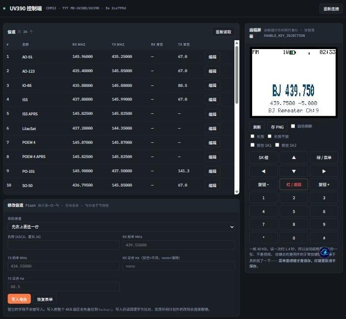
| 卡片 | 干什么 | 要求 |
|---|---|---|
| 信道 | 列出整张码表：编号 / 名称 / 收发频率 / 收发亚音 | — |
| 修改信道 | 改名称（ASCII ≤16）、收发频率、收发亚音。亚音留空 = 不改，填 none = 清除 | — |
| 远程屏幕 | 电台屏幕实时画进浏览器、可存 PNG；一整块虚拟键盘，带「长按 / 长按不放 / 按住 SK1 / 按住 SK2」四个修饰勾选 | 看屏任何固件都行；按键要 KEY_INJECTION |
| 电台信息 | 机型、固件版本、编译日期、Flash 序列号、特性位（反显 / 扩展呼号库 / 语音提示） | — |
| VFO | 当前 VFO 状态，只读 | — |
| 电台操作 | 往电台屏幕上推文字（每行 ≤16 个 ASCII）、退出 CPS 屏、闪红/绿灯、保存设置、重启、进入热点模式 | — |
| 频段占用 | 开始记录 / 停止 / 查状态 / 导出并解析，解析完的热力图就长在同一张卡里 | BAND_LOG |
| AES 密钥 | 生成随机密钥、写 0–15 号密钥槽、设发射密钥槽（0 = 关闭加密发射） | AES |
| 备份 | 按「区域 + 起始地址 + 长度」读任意区段存盘，另有 校准区 / 信道区 两个一键按钮 | — |
GET /api/mirror?scale=N 回 PNG，<img src> 本来就免费干这件事。一帧读回约 1.4 秒，所以「自动刷新」是每 2 秒一张，不是视频。NMEA 模式会占住串口，两边都连不上 —— 改回 Off 或 On。全在 tools/。控制端单独一节，见 13 控制端。
| 脚本 | 干什么 |
|---|---|
| flash.py | 刷机 + 回读校验（--list / --dfu / --yes / --verify） |
| sat.py | 卫星星历：list / dump / refresh / addfm |
| ogd77.py / ogd77_ctl.py / ogd77_write.py | CPS 协议：读任意区段 / 发命令 / 写信道 |
| ogd77_server.py + ui/index.html | 浏览器控制端，见 上一节 |
| ogd77_screen.py | 抓屏（任何固件都能抓）+ 按键注入（需 KEY_INJECTION） |
| drive.py | 按一串键并每步截图，UI 改动自查就靠它 |
| wf_preview.py | 从当前屏幕反查 level、渲染新旧配色对比，不用刷机 |
| bandlog.py / render_bandlog.py | 频段日志解码与出图 |
| package_fw.py | 把 .bin 打成 CPS 能刷的固件 zip（固定名 + 18 个 .gla 语言文件） |
这些都试过了，结论是死的。再碰一次只是重新花一遍时间。
0x9F 想清掉 app 初始栈指针的有效位。实测 HAL_FLASH_Program 返回 HAL_OK、FLASH_GetError() 是 0，但那个字根本没变，重启照样进正常模式。最可能是 TYT bootloader 给 app 扇区上了写保护。上游的 dmr_reboot_dfu.py（0x90）也不行 —— 它跳的是 STM32 的 ROM bootloader，这台用的是 TYT 自己那个（证据：DFU 报的内存布局从 0x800c000 起）。已改成明确报错，不再干等一个永远不会出现的设备。uiNotificationRefresh() 先画一遍没有通知的画面推给屏，再把通知直接 memcpy 到物理面板 —— 通知只存在于屏幕上，从不进帧缓冲。这是结构性的，卫星闹钟就是栽在这上面。menuSatelliteScreenClearPredictions()，把闹钟清掉 —— 测试动作本身杀死了被测对象。而且它是真的写 RTC，重启不会恢复：我就这么把电台时钟弄错了 33 分钟。验证手段不该扰动被测对象。size 的 text 判断代码变没变buildmake 只看源文件时间戳，不看开关。会得到混合构建 —— 我因此以为撞上了 104 字节的神秘 RAM 溢出，其实是上一轮残留的 AES 目标文件。__DATE__，增量构建时那个文件没重编。用 flash.py --verify 回读 MCU ROM。Time:Off 按红退出，设置整个回滚了，还以为是固件没生效。主题类的另外要 SK2+绿 才写进 flash。clockManagerSetRunMode(kAPP_PowerModeHsrun) 切 CPU 到高速档，USB 会重新枚举、COM 口掉线。工具必须能容忍重连。grep 等一个 Python 脚本的中文输出